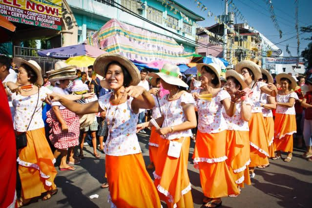
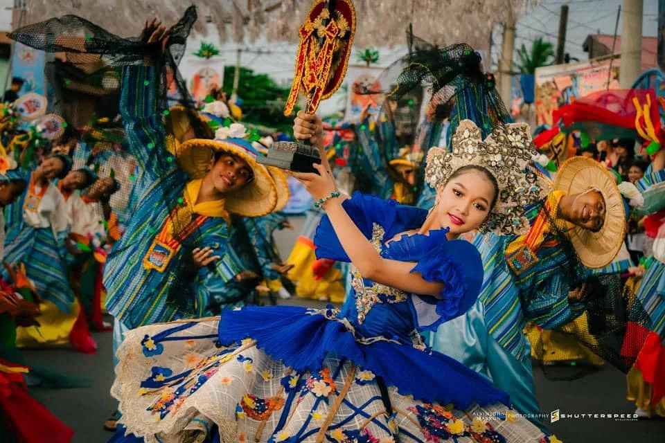
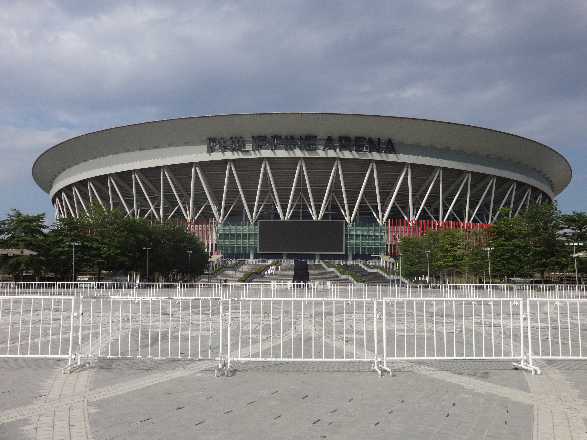
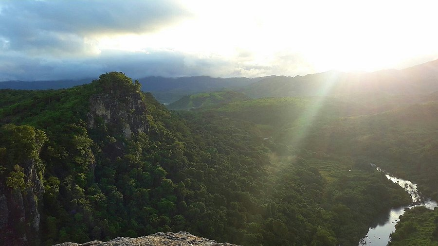
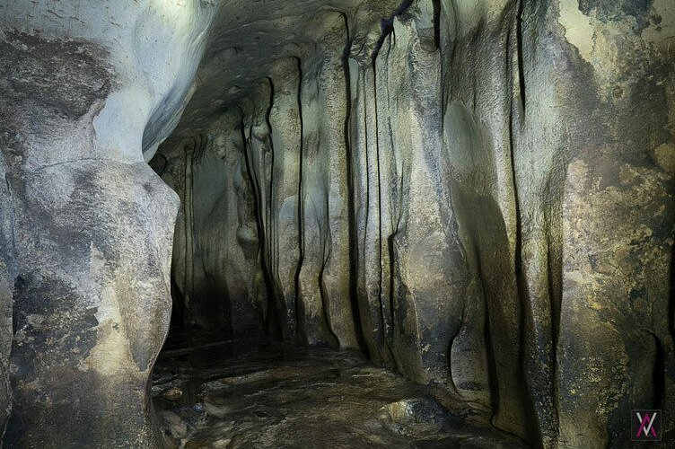
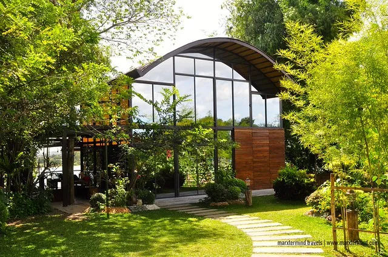

Kneeling Carabao Festival (May 14–15)
The Kneeling Carabao Festival is one of the most unique and celebrated festivals in the Philippines, held every May 14–15 in Pulilan, Bulacan. Devotees honor San Isidro Labrador by parading decorated carabaos through the streets, making them kneel in front of the church as a sign of respect, gratitude, and devotion.
The festival showcases colorful street parades featuring carabaos adorned with decorations, highlighting the town’s strong agricultural traditions and deep religious faith. It attracts both locals and tourists who witness this one-of-a-kind cultural celebration.

Obando Fertility Rites (July – Bocaue)
The Obando Fertility Rites is one of the oldest and most unique festivals in the Philippines, held every May 17–19 in Obando, Bulacan. Devotees — many praying for a child or a life partner — dance in the streets in honor of St. Clare of Assisi, St. Paschal Baylon, and the Virgin of Salambao, believing their prayers will be answered.
The festival features colorful street dancing processions, fluvial parades, and religious masses, drawing thousands of pilgrims from across the country each year.

Singkaban Festival (Malolos City)
The Singkaban Festival is Malolos City's grand annual cultural celebration, held every September to mark the city's foundation anniversary and honor Bulacan's revolutionary heritage. "Singkaban" refers to the traditional bamboo arch used to decorate homes during fiestas.
It features street dancing, bamboo craft exhibits, trade fairs, cultural performances, and historical re-enactments celebrating the proclamation of the Malolos Constitution and the First Philippine Republic.
Discover Bulacan
A journey through historic landmarks and natural wonders.
Must-Visit Destinations
Barasoain Church
Malolos City, Bulacan

Biak-na-Bato National Park
San Miguel, Bulacan

Philippine Arena
Bocaue / Santa Maria, Bulacan

Mount Manalmon
San Miguel, Bulacan

Pinagrealan Cave
Norzagaray, Bulacan

San Rafael River Adventure
San Rafael, Bulacan
About the Destination
Interactive Location
The Visionary of
Bulacan
Meet the steward of Bulacan's heritage and progress. A leader dedicated to bridging the province's revolutionary legacy with a modern, inclusive, and sustainable future.
Government Officials
Hon. Daniel Fernando
Hon. Alexis C. Castro
Hon. Michael M. Aquino
Hon. Romina D. Fermin
Hon. Erlene Luz V. Dela Cruz
Hon. Lee Edward Nicolas
Hon. Raul A. Mariano
Hon. Romeo V. Castro Jr.
Public Service Background
PROVINCE Overview
Key facts and geographic information about the Province of Bulacan.